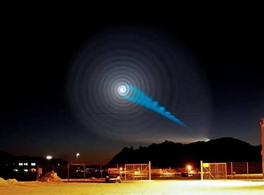

The light could be seen in all of Trøndelag to the south and all across the three northern counties which compose Northern Norway, as well as from Northern Sweden and it lasted for 10 minutes.

Astronomer Knut Jørgen Røed Ødegaard suggested that it could have been a rare, never-before-seen Northern Lights variant.
UFO enthusiasts speculated whether the aerial light display could be evidence of extraterrestrial intelligence, proposing among other things that it could be a wormhole opening up, or somehow was linked to the recent high-energy experiments held at the Large Hadron Collider in Switzerland.
Russia admitted it was the failed launch of a Russian rocket, Bulava ICBM, a problem-plagued Russian missile that reportedly had several test launches scheduled.
In my opinion, yes, it was a misunderstanding. The russian government probably wouldn't make up a lie considering they were quite embarassed about the failed rocket.